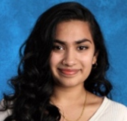
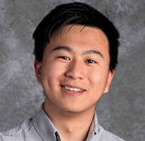

She is broadly interested in the neural computations underlying sensory perception and learning. In the
Franks lab, she is studying the transformation of olfactory information from the olfactory bulb to piriform
cortex.
Graduate Student, The Franks Lab

Vergil R. Haynes
Applied Mathematics PhD, ASU
Models of Cortical Dynamics

Russell Jarvis
Interdisciplinary Neuroscience PhD, ASU
Reduced Neuron Model Validation

Morteza Rouhani
Applied Mathematics PhD, ASU
Dynamics of Dendritic Spines
Collaborator: Steve Baer

Charly McCown
Computational Mathematical Sciences BS
Data Analysis and Programming
Junior Quantitative Marketing Analyst: Carvana

David Ackerman
Computational Mathematical Sciences BS
Modeling TRP Channels
Collaborator: Wade Van Horn

Laasya Sarva
BASIS Peoria
Senior Honors Project on Data Analysis

Aaron You
BASIS Ahwatukee
Senior Honors Project on Data Analysis

Xavier Henes
Computational Mathematical Sciences BS

Hannah and Harris Shadmany
BASIS Mesa
Models of olfactory perception for enantiomers

Jason Ma
Barrett, the Honors College, Neuroscience BS

Lidia Csernak
Barrett, the Honors College, Biology BS
Biomedical Informatics for Epilepsy Patients
Collaboration with Mayo Clinic

Mohammad Samavat
Electrical Engineering PhD, ASU
Olfactory Modeling

Nitesh Thali
Master's Computer Science, ASU
Model Validation

Rajesh Vakkalagadda
Master's Computer Science, ASU
NeuroML-DB Development & Model Validation

Venkata Vineel Vutukuri
Master's Computer Science, ASU
NeuroML-DB Development & Model Validation

Genevieve Toutain
Applied Mathematics PhD, ASU
Structured Population Models of Dendritic Spines
Collaborator: Steve Baer

Annie Didier
Applied Mathematics, ASU
Motor Systems Neuroscience

Michael McCamy
Applied Mathematics PhD, ASU
Visual Neuroscience
Collaborators: Steve Baer, Steven Macknik, Susana Martinez-Conde

Sandra Berger
Interdisciplinary Neuroscience PhD, ASU
Software Development and Modeling of Drosophila MN5
Collaborator: Steve Baer

Francisco Costela
Interdisciplinary Neuroscience PhD, ASU
Significance of Microsaccades for Perception and Oculomotor Control
Co-Advisor: Susana Martinez-Conde
Currently: Schepens Eye Research Institute, Harvard Medical School

Dori Luli
PhD Applied Mathematics for the Life and Social Sciences, ASU
Modeling Neuronal Networks of the Olfactory System
Collaborators: Carlos Castillo-Chavez and Brian Smith
Currently: Senior Associate, Discover Financial Services

Chao Zhang
PhD Computer Science, ASU
NeuroML Database Development
Collaborator: Suzanne Dietrich

Ashwin Rajadesingan
PhD Computer Science, ASU
NeuroML Database Development
Collaborator: Suzanne Dietrich

Harsha Velugoti Penchala
Master's Computer Science Engineering, ASU
NeuroML Database Development
Collaborator: Suzanne Dietrich
Currently: System Design Engineer at Xilinx

Veer Addepalli
Master's Computer Science, ASU
NeuroML Database Development
Collaborator: Suzanne Dietrich

Jason Young
School of Mathematical and Statistical Sciences, ASU
Undergraduate Research
Modeling Activity of Networks of Excitable Cells

Geresse Tchegho
Chemical Engineering, ASU
Undergraduate Research
Modeling Activity of Networks of Excitable Cells

David Tello
PhD Applied Mathematics for the Life and Social Sciences, ASU
Modeling Dynamics of Dopamine Release
Collaborators: Cindy Greenwood and Eddie Casteneda
Currently: Investment Associate, Raza Development Fund

April Chiu and Miles Manning
Barret Honors College and CSUMS, ASU
Undergraduate Research
Modeling Networks of Excitable Cells Connected by Gap Junctions

Marco Herrera-Valdez
Postdoctoral Researcher, ASU
Modeling Drosophila Motor Neuron MN5
Collaborator: Carsten Duch

Sara Selitsky
Biologial Sciences, ASU
Undergraduate Research
NeuroML and NeuroML Database
Currently: Graduate Student Bioinformatics, NCSU

Sidharth Agarwal
Master's Computer Science, ASU
NeuroML Database Development
Collaborator: Suzane Dietrich

Pradeep Thiyyagura
Master's Computational Biosciences, ASU
Modeling Olfactory System Networks
Collaborators: Brian Smith and Renate Mittlemann
Currently: Researcher, Banner Alzheimer's Institute

Mini Kurian
PhD Applied Mathematics, ASU
Modeling Motoneurons Following Spinal Cord Injury
Collaborator: Ranu Jung

Nick Tatonetti
Mathematics & Molecular Biology and Biotechnology, ASU
UBM Program, SOLUR Program, Beckman Scholarship
Metabolic Flux Models of Cyanobacterium
Collaborator: Willem Vermaas
Currently: Associate Professor, Columbia University

Andy Jennings
PhD Mathematics, ASU
Modeling Drosophila Motoneuron MN5
Collaborator: Carsten Duch
Currently: VP, Software at Barcoders.com

Muhammad Dur-e-Ahmad
PhD Applied Mathematics, ASU
Modeling Activity-dependent Plasticity in Dendritic Spines
Collaborators: Steve Baer and Zdzislaw
Jackiewicz
Currently: Visiting Professor, University of Waterloo

Pamela Reitsma, Genevieve Toutain, Odalys Colon, Irina Kareva
Mathematical and Theoretical Biology Institute, ASU
Modeling Pacemaker Networks of Cardiac Activity in Drosophila
Collaborator: Dusty Dowse

Adriana Kuiper
UBM Program, ASU
Undergraduate Research
Modeling Pacemaker Networks of Cardiac Activity

Greg Golden
Master's Computational Biosciences, ASU
Java Programming for Neuroanatomical Data Conversions

Melissa Lou
UBM Program, ASU
Undergraduate Research
Data Analysis and Visualization for Simulations of Coupled Phase Oscillators

Carrie Diaz Eaton
Master's Mathematics, UMaine
Modeling Interneurons in a Model Sensory System
Currently: Professor, Unity College

Jason Sewall
Honors, Mathematics, Computer Science, UMaine
Simulating and Visualizing Large Networks of Coupled Oscillators
Currently: PhD Computer Graphics, UNC Chapel Hill

Weihong Qi
PhD Biology, Master's Computer Science, UMaine
Initial Design and Implementation of MorphML
Currently: Research Scientist at Intel